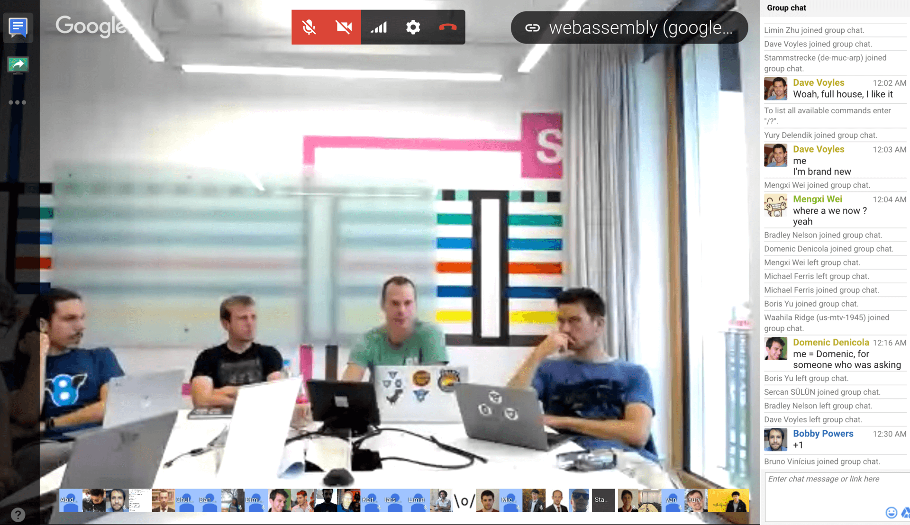
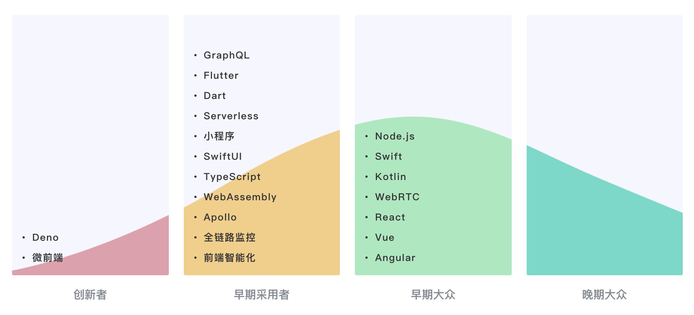
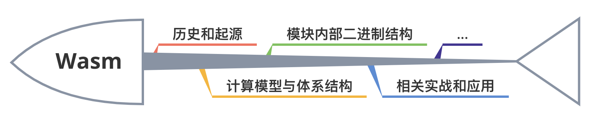
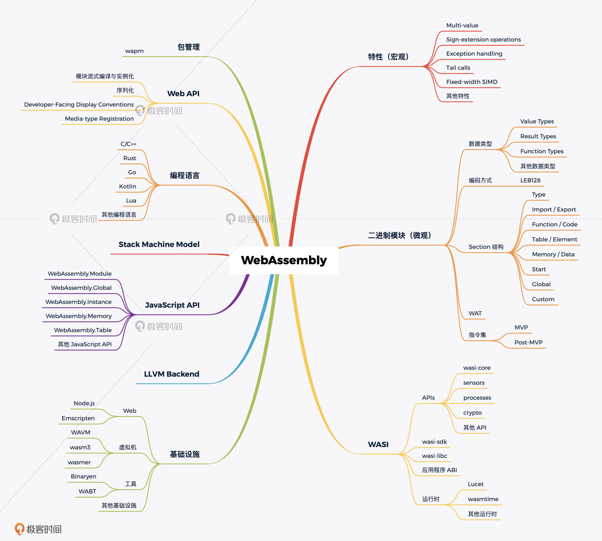
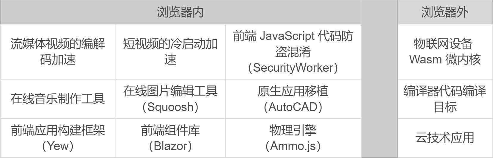
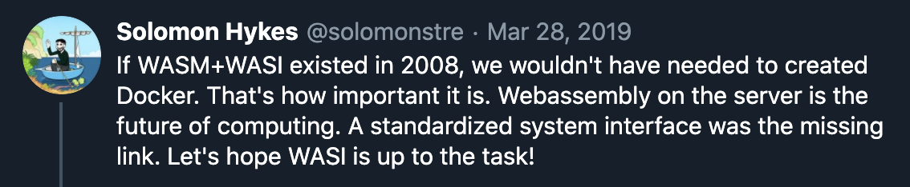

- 00 开篇词 我们为什么要了解 WebAssembly？.md.html
- 01 基础篇：学习此课程你需要了解哪些基础知识？.md.html
- 02 历史篇：为什么会有 WebAssembly 这样一门技术？.md.html
- 03 WebAssembly 是一门新的编程语言吗？.md.html
- 04 WebAssembly 模块的基本组成结构到底有多简单？.md.html
- 05 二进制编码：WebAssembly 微观世界的基本数据规则是什么？.md.html
- 06 WAT：如何让一个 WebAssembly 二进制模块的内容易于解读？.md.html
- 07 WASI：你听说过 WebAssembly 操作系统接口吗？.md.html
- 08 API：在 WebAssembly MVP 标准下你能做到哪些事？.md.html
- 09 WebAssembly 能够为 Web 前端框架赋能吗？.md.html
- 10 有哪些已经投入生产的 WebAssembly 真实案例？.md.html
- 11 WebAssembly 在物联网、多媒体与云技术方面有哪些创新实践？.md.html
- 12 有哪些优秀的 WebAssembly 编译器与运行时？.md.html
- 13 LLVM：如何将自定义的语言编译到 WebAssembly？.md.html
- 14 有哪些正在行进中的 WebAssembly Post-MVP 提案？.md.html
- 15 如何实现一个 WebAssembly 在线多媒体处理应用（一）？.md.html
- 16 如何实现一个 WebAssembly 在线多媒体处理应用（二）？.md.html
- 17 如何实现一个 WebAssembly 在线多媒体处理应用（三）？.md.html
- 18 如何进行 Wasm 应用的调试与分析？.md.html
- 19 如何应用 WASI 及其相关生态？.md.html
- 20 总结与答疑.md.html
- 结束语 WebAssembly，未来已来.md.html
- 捐赠
00 开篇词 我们为什么要了解 WebAssembly？
你好，我是于航，欢迎来到我的 WebAssembly 入门课！
提起 WebAssembly，你可能对它的印象只是一个看上去比较“抽象”的新技术。它不像一个新推出的框架或者库，功能定位十分清晰，并且可以直观地通过代码来展示。
如果别人问我：“什么是 WebAssembly？”从一个十分严谨的角度来看，我可能会回答说：“WebAssembly是基于栈式虚拟机的虚拟二进制指令集（V-ISA），它被设计为高级编程语言的可移植编译目标”。
不知道你听到这样一段对 “WebAssembly是什么？” 这个问题的解答之后，会有怎样的感想。可能大多数人的第一直觉会感到疑惑，这跟它名字中的 “Web” 一词有什么关系？还有人可能会觉得，所谓指令集是属于 CPU 那一层次的，跟我的实际工作应该没有什么关系吧。
没错，所有这些真实的顾虑和疑惑，实际上都成为了阻碍 WebAssembly 这项技术被社区开发者广泛接纳的“绊脚石”。
那为何我想要开设这样一门课程，来专门给你讲解这门技术呢？为什么我会如此痴迷这门技术？它到底有什么值得我们开发者去学习和使用的呢？
我和 WebAssembly 那些事儿
说起来，WebAssembly（为了方便书写，后面我们简称为 Wasm）这门新技术，自 2015 年诞生至今，已经过去了将近 5 年的时间。而自 2017 年，我开始接触这门技术以来，便一直不断地在为它投入热情。2018年，我出版了国内第一本介绍该技术的书籍《深入浅出 WebAssembly》。
期间，我也为 Emscripten 编译工具链贡献了部分代码。2019 年底，为了能够更进一步地为 Wasm 生态做出贡献，我开始研发自己的轻量级 Wasm 虚拟机 — TWVM，旨在打造一个具有高性能、高可移植性以及更加轻量的 Wasm 虚拟机。并同时能够基于此，来针对国内的众多本地化场景进行一些试验。
我认真回想了下，我对 Wasm 的热爱，其实始源于 2017 年末参与的一次 Wasm 线上研讨会。
这个研讨会是由 WCG（WebAssembly Community Group）定期举办的。会议会召集 WCG 成员一起讨论后期 WebAssembly 标准的制定方向和实现细节。每一次研讨会，都会由 WCG 主席亲自进行主持。
让我印象最为深刻的，不是每一次线上会议的参与人数有多少，也不是讨论有多激烈，更不是会议开了多长时间，而是在每次会议结束后，都会有完整的讨论记录存档。
这些会议产出的结果更会以“肉眼可见”的速度被快速地采纳、标准化，最后被 V8 团队“率先”实现在 Chrome 浏览器中。而早期的快速实现则可以让 Wasm 在初期以“小步快跑”的方式接触前线的开发者，在不断地迭代中快速“试错”。同时这也为其后续的社区推广起到了积极的作用。

其实，一个团队能够有多少凝聚力、在某个事情上能够有多少投入和产出，从这整个过程中便可以窥见。而被注入如此多精力的事情，也一定会充满着激情与活力。这也是我下定决心，想要把自己的大部分精力都投入到 Wasm 这门技术的一个起点。
随着 Wasm 这门技术的不断发展，我也开始不断地参加各种社区和公司举办的技术沙龙，来向更多人布道 Wasm 这门技术。
2018年，为了能够让 Wasm 被更多人所了解，我开始写书。写书的过程其实特别消耗精力，尤其是当你要写一本国内外都没有人写过的书时，你没有任何可以参考的资料。每当深夜写稿没有灵感、烦躁、郁闷的时候，我就会想起自己对 Wasm 的热爱，会想让更多人知道这门技术，应用这门技术。也正是这份热情与执着带我挺过了那段最难熬的日子。
写书其实是我想去普及 Wasm 这门技术的一个新起点。因为我在写书之前就发现，虽然大家或多或少都听说过 Wasm，但是一些对于 Wasm 的常见认知错误，逐渐让 Wasm 在社区的发展方现出现了偏差。而从现阶段来看，网上关于 Wasm 的中文文章大多以企业或个人的实践介绍为主，对于想要完整理解 Wasm 及其相关生态来说可能还不够全面，而官网的文档和规范又显然不适合直接作为“入门教材”。
在这个互联网时代，大家似乎对出版的纸质读物已然没有了太多兴趣，我从 2018 年末出书到现在，Wasm 一直在不断地更新发展，我对 Wasm 也有了很多新的想法和理解。同样的，我也一直在寻找一个更加适合初学者去了解、运用 Wasm 的方式，去普及 Wasm 这门技术。最后发现专栏的形式会更活泼，也更通俗易懂一些。
在正式为你介绍 Wasm 这项技术之前，我想先带你看一张前端技术的生命发展周期图。

从图里你能够很清楚地看到，Wasm 正在逐渐从一个“创新者”变成一个“早期采用者”。从论文中的思想理论走向生产实践的前沿。甚至从它的起源地出发，从 Web 平台逐渐走向各类场景。
实际上，Web 前端正变得越来越开放。如今，我们不仅能够直接使用 HTML、JavaScript 来编写各类跨端应用程序，Wasm的出现更能够让我们直接在 Web平台上，使用那些业界已存在许久的众多优秀的C/C++代码库。
除此之外，Wasm还能让Web 应用具有更高的性能，甚至让 Web 应用能够与原生应用展开竞争。不仅如此，走出 Web，WASI 的出现更是为 Wasm 提供了更大的舞台。Wasm 有着非常巨大的潜在影响力，而且现在已经初露锋芒。
让我们来一块看看自 2015 年 Wasm 一路走来，这期间都经历了哪些重要的发展节点。
2015 年 4 月，WebAssembly Community Group 成立；
2015 年 6 月，WebAssembly 第一次以 WCG 的官方名义向外界公布；
2016 年 8 月，WebAssembly 开始进入了漫长的 “Browser Preview” 阶段；
2017 年 2 月，WebAssembly 官方 LOGO 在 Github 上的众多讨论中被最终确定；
同年同月，一个历史性的阶段，四大浏览器（FireFox、Chrome、Edge、WebKit）在 WebAssembly 的 MVP（最小可用版本）标准实现上达成共识，这意味着 WebAssembly 在其 MVP 标准上的 “Brower Preview” 阶段已经结束；
2017 年 8 月，W3C WebAssembly Working Group 成立，意味着 WebAssembly 正式成为 W3C 众多技术标准中的一员。
自此之后，还有更多令人激动的“历史性节点”不断出现，比如 WASI 概念的提出和标准化、Byte Alliance 组织的成立、第一届 WebAssembly Summit 全球峰会的成功召开等等；而其中值得一提的是：2019 年 12 月，W3C 正式宣布，Wasm 将成为除现有的 HTML、CSS 以及 JavaScript 之外的第四种，W3C 官方推荐在 Web 平台上使用的“语言”。
所有上面提到的这些事情，无不都在见证着 Wasm 的不断发展，我相信你也能够体会到 Wasm 在社区推广如此困难的情况下，其相关生态还能够做到这种程度，这背后其实就是核心团队的一次“赌注”。因为大家都坚定地相信，在未来的 3～5 年里，Wasm一定能够被逐渐广泛地应用到包括 Web 在内的各个平台和业务领域中。
学习 Wasm，我们到底要学什么？
那么对于这样一门抽象的技术，我们应该以怎样的方式去了解它呢？在学习本课程前，我希望你已经拥有了一定的 C/C++ 编码基础，以及 Web 前端（JavaScript / CSS / HTML）编码基础。如果你还没有相关经验，或者相关的知识忘得差不多了，也不用担心，我为你准备了一节基础课，会带你学习、回顾一些在课程中涉及到的，相关领域的基础知识。
首先，在本课程中，我们不会介绍以下内容：
- 每一个 Wasm 虚拟指令的语义和用法；
- 虚拟机实现相关的内容，比如“如何构建一个 Wasm 虚拟机”。
我们将会介绍的内容：

- Wasm 的历史和起源；
- Wasm 采用的计算模型和体系结构；
- Wasm 模块的内部结构；
- Wasm 相关的实战和应用。
总而言之，我们不会介绍与虚拟机实现相关的、过于细节的一些内容。而是会从整体来看，把 下面这些问题给你一一解释清楚。比如：Wasm 是什么？它能做什么？别人已经做了什么？它是怎么来的？它未来会如何发展？……
为了能够从整体的角度直观地了解整个 Wasm 生态的全貌，我特意做了如下这张知识地图。你可以通过它来了解有关 Wasm 的任意一个方面的内容。相信随着时间的推移，这张图上的分支会变得越来越多，体系会变得越来越庞大。期待未来的 Wasm 能够在各个分支领域内“开花结果”。

学习 Wasm，我们应该怎么学？
为了能够把课程内容更加直观地展示出来，我把课程整体分为了三大模块。每一个模块下都由若干个子问题组成。由于 Wasm 整个知识体系的内容非常庞大，且较为碎片化，因此，带着一个个问题来了解 Wasm 可能会是一种更加合适的学习方式。
第一个模块是核心原理模块。在核心原理模块中，我将会给你介绍与 “Wasm 是什么？” 这个问题有关的几个方面的知识点。我会从最基本的 Stack Machine 计算模型开始介绍，逐渐带你从外部体系深入到 Wasm 的二进制世界。
在这里，我会给你介绍 Wasm 使用的二进制编码方式和基本数据类型、模块内部的组织结构以及 Wasm 的可读文本格式 — WAT。最后，我会介绍与 Wasm 紧密相关的另一项技术 — WASI。以及 Wasm 与 Web 平台的互操作性 — Wasm MVP 标准下的 JavaScript API 与 Web API。
第二个模块是应用模块。在应用模块里，我将首先为你解答目前被讨论最多的一个问题 —— “我们是否能够使用 Wasm 这门技术来优化现代的 Web 前端框架？”。然后我将给你介绍，目前业界有哪些已经投入到生产环境中使用的 Wasm 案例。以及在这些案例中，各个公司都是如何借助 Wasm 技术来优化其产品体验的。
接下来，我将介绍 Wasm 在物联网、多媒体以及云技术等方面的一些，业界已经正在进行的尝试。然后，我们将会一起浏览目前业界最优秀的一些 Wasm 底层基础设施，这些基础设施都有着其各自不同的特点与使用场景，为构建稳定安全的 Wasm 应用提供了强大的底层支持。
最后，我将为你讲解另外一个不得不聊的话题 — Wasm 与 LLVM。借助于 LLVM，我们将能够为“任意”的、基于 LLVM 构建的编程语言支持，将 Wasm 设置为其最后的编译目标。然后，我们将再次回到 Wasm 标准，来看看正在行进中的 Post-MVP 标准中有哪些“新鲜事”。
第三个模块是实战模块。在这个模块中，我将手把手带你一步一步地完成一个线上多媒体 Web 应用。在这个应用中，我们将会使用 Wasm 来优化多媒体资源的处理过程，同时我们将介绍与 Wasm 有关的一些 API 以及编译工具链，在实际项目中的使用方式。
而在这之后，我们也将讨论如何调试和分析一个 Wasm 应用。最后，我们将会介绍 WASI 及其相关生态的基本应用方式，并尝试在目前最流行的 Wasm 运行时中使用它们。
这里，我想和你分享一下，我从 2017～2020 年这将近三年的时间里，所亲眼见到或实际接触过的一些 Wasm 应用场景。

除此之外，你还要知道，目前已经有多达几十种编程语言（C/C++、Rust、Go、Kotlin 等）的代码，可以在相关基础设施的帮助下被编译为 Wasm 二进制格式，Wasm 已经逐渐成为编程语言不可或缺的一个重要的编译目标。
上面我分享的这些实际应用场景，还仅仅是依赖于 Wasm 的 MVP 版本标准所提供的功能特性实现的。相信随着 Post-MVP 标准的逐渐确定和相应基础设施的完善，以及 WASI 标准的进一步发展，Wasm 的可用领域将会变得更加广泛。
Docker 的创始人 Solomon Hykes 曾在 Twitter 上说过这样一段话：

翻译过来的大致意思是：
如果 WASM 和 WASI 早在 2008 年就存在，那么我们就不需要创建 Docker。可见 Wasm 是多么重要。服务器上的 WebAssembly 将会是“计算”的未来模式。而现在的问题是缺少标准化的系统接口。希望 WASI 能够胜任这项工作！
不用我多说，相信你能够体会到 Wasm 出现的意义，以及它在未来巨大的可能性。作为一项关注于底层的变革性技术，我相信 Wasm 能够催生出更多建立于它之上的新型技术解决方案。可能在未来某一天， Wasm 将会成为每一个互联网工程师的必备技能。
以上，就是这门课我想分享给你的全部内容了。总的来说，我希望通过这门课你能够弄清以下三个问题：Wasm 究竟是什么？Wasm 可以怎么用？Wasm 的现在和以后能够给我们带来什么？
我虽然无法用短短十几篇文章，把整个 Wasm 生态的所有内容全部都概括到。但我希望你能够保持一颗持续学习和乐于探索的心，带着这样的信念去了解和挖掘新兴技术，相信你能够收获到与他人不一样的宝藏。
Wasm 核心团队当初在 GitHub 上的官方 Organization 中，以这样一句话描述了他们的所在位置 —— “The Web!”。Wasm 虽然起源于 Web，但如今，它已经不止于 Web。那就让我们来一起探索 Wasm 带来的，那个拥有无限可能的世界吧！
© 2019 - 2023 Liangliang Lee. Powered by gin and hexo-theme-book.